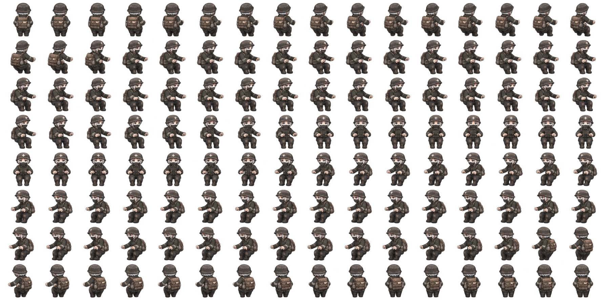

Piloto sentado, separado da moto
128 quadros em grade 16 × 8, com fundo transparente. Arte separada para ajustar o encaixe na moto.
As vistas geradas têm ângulos aproximados. O encaixe das mãos e do banco precisa ser calibrado antes de usar no jogo.
Baixar PNG · Metadados dos quadros
